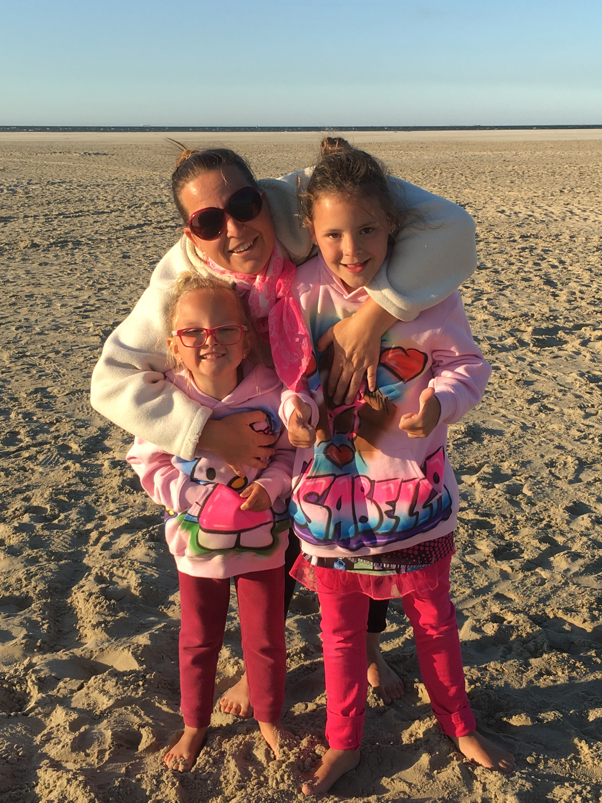

Arvid Waasdorp, I am 33 years old and live in Utrecht, The Netherlands. I have many roles in life like; son, father, student, employee, (a bit nerdy), friend.
I find it important to be transparant and true to my surroundings (authentic). If possible I will try to help every one with the joy in the result :).
I am working for the Royal Dutch phone company called KPN. My collegue and me have recently become responsible for defining the vision and strategy of online/digital for our corporate customer.
I have a fiance and two childeren. We are planning to get married somewhere 2016 :).

Isabella is my oldest daughter and she is 8 years old. On September 27th, Marielouise turned 5.
I cannot describe the joy they will give me. And the support for all the supid sh** I undertake :D.
I have several activities I spend my free time with.
My childeren
Yeah it is a cliche, but in some way it is the truth. With my oldest I can do some gaming like Minecraft or Rayman, and my youngest is into tennis. Both things are great to do with them.
Friends
I love to meet my friends. Going to the movies or just drinking a cup of coffee, I am in for it.
Golf
 My sports is golf! No question about it. Sometimes it looks more like landscaping, but that fade away when I hit the ball as I want it.
My sports is golf! No question about it. Sometimes it looks more like landscaping, but that fade away when I hit the ball as I want it.